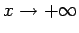
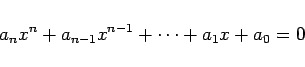
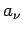
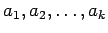
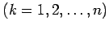
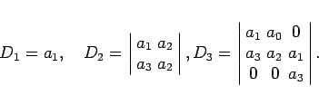

Inhalt Index DeskTop Bronstein

 Differentialgleichungen Gewöhnliche Differentialgleichungen Differentialgleichungen höherer Ordnung und Systeme von Differentialgleichungen Lösung linearer Differentialgleichungen mit konstanten Koeffizienten
Differentialgleichungen Gewöhnliche Differentialgleichungen Differentialgleichungen höherer Ordnung und Systeme von Differentialgleichungen Lösung linearer Differentialgleichungen mit konstanten Koeffizienten


Bei verschiedenen Anwendungen, z.B. in der Schwingungslehre, ist es wichtig festzustellen, ob eine beliebige Lösung einer homogenen Differentialgleichung mit konstanten Koeffizienten für  gegen Null strebt. Das ist stets dann der Fall, wenn die Realteile aller Wurzeln der charakteristischen Gleichung negativ sind. Die Gleichung
|  | (9.42a) |
hat nach dem Satz von HURWITZ genau dann nur Wurzeln mit negativem Realteil, wenn bei durchweg positiven Koeffizienten  sämtliche Determinanten
positiv sind. Der Bau der Determinanten Dk läßt sich so beschreiben, daß in der Hauptdiagonale die Koeffizienten  stehen  und daß in den Zeilen die Koeffizientenindizes von rechts nach links aufsteigende Zahlen durchlaufen. Koeffizienten mit Indizes unterhalb Null und oberhalb n werden durch Nullen ersetzt.
| Beispiel |
|
Für ein kubisches Polynom haben die Determinanten gemäß (9.40b) die folgende Gestalt: 
|